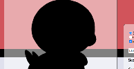
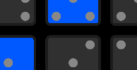
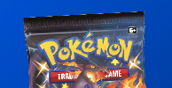
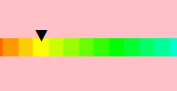

Who's that Pocket Monster?
A "Who's that Pokémon?" webgame. Pokémon images taken from Bulbapedia using ImageScraper and manipulated using either Canvas (if on desktop) or CSS image filters (if on mobile). Created using Node.js, JavaScript with Babel and Gulp, and HTML/CSS with Handlebars and SASS. Solo project, still in development.

BonesNode
A port of the game Dice 10000 to web. Uses Socket.io to create private online rooms to be able to play with others over the internet. Created using Node.js, JavaScript with Babel and Gulp, and HTML/CSS with Handlebars and SASS. Solo project, still in development.

Pokémon TCG Booster Pack Simulator
A Pokémon TCG pack opening simulator. Uses the Pokémon TCG API to get card/set data, and pull rate data from various sources in an attempt to be accurate to each set's own pull rates. Created using Node.js, JavaScript with Babel and Gulp, and HTML/CSS with Handlebars and SASS. Solo project, still in active development.

Dragon Ball Audio VisualiZer
A Dragon Ball Z-themed audio visualizer project. Audio frequencies are displayed using HTML5 canvas in conjunction with an audio context object. Created using JavaScript, Bootstrap, and HTML/CSS. Team project with Tristan Marshall.
Replay Hut
A site designed to host clips from video games. Takes a YouTube link with other parameters and displays clips in a gallery. Created using Node.js, MongoDB, Redis, JavaScript with Gulp, and HTML/CSS with SASS. Team project with Tristan Marshall.
Dexter
Uses PokéAPI to get data on a given Pokémon, then displays that data to a user. Also uses images from Pokémon Showdown. Created using Node.js, JavaScript, and HTML/CSS. Solo project.

Animal Crossing: New Horizons Color Picker
Converts a hexadecimal color code to the closest color available in the Pro Design feature in Animal Crossing: New Horizons for the Nintendo Switch. Uses jscolor for the color picker. Created using JavaScript and HTML/CSS. Solo project.

Kilisha's Journey
A match-3 game in which the entire rows/columns move when a "rune"/piece is selected. Contains 3 levels of increasing difficulty. Created in Unity, using C# scripts. Team project with Patrick Hosman, Robert Piwko, Nathan Terrell, and Nick Visconti.

bBones
A port of the game Dice 10000 to PC using C# and Windows Forms. Currently unfinished. Supports up to 12 local players. Solo project.

Bones iOS
A port of the game Dice 10000 to iOS using Swift. Only supports two local players. Solo project.

Study of Fraud
A first-person escape room/puzzle game. Created in Unity, using C# scripts. Team project with Patrick Hosman, Robert Piwko, Nathan Terrell, and Nick Visconti.

Giant Buy
Uses GiantBomb and Best Buy APIs to search for games. GiantBomb returns a description, ESRB rating, and release date, and if the game is found using the Best Buy API, a link will be added. Also uses Firebase to store collection data and last searched term. Created using JavaScript, BootstrapVue, and HTML/CSS. Team project with Tristan Marshall.

Dementor Adventure
A game where you play as a wizard fighting off Dementors at Hogwarts. Makes use of collision detection which is optimized by use of an octree. Created in C++ using the Simplex library. Team project with Diana Diaz, Tristan Marshall, and Matthew "Hammer" O'Herren.